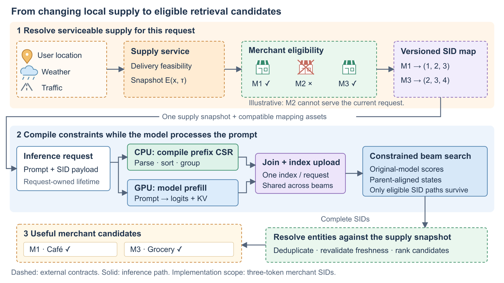
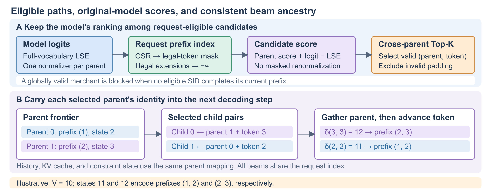
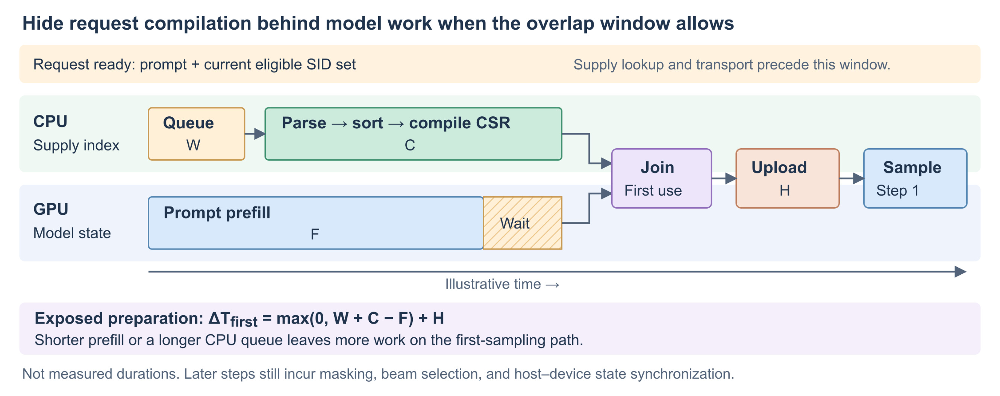
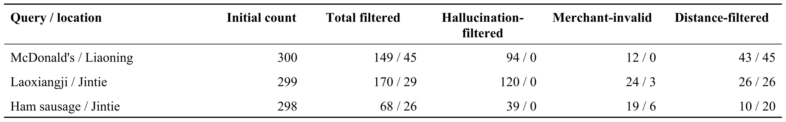
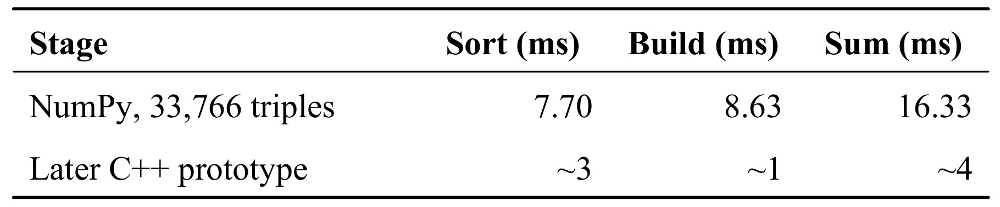
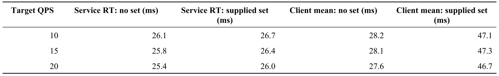
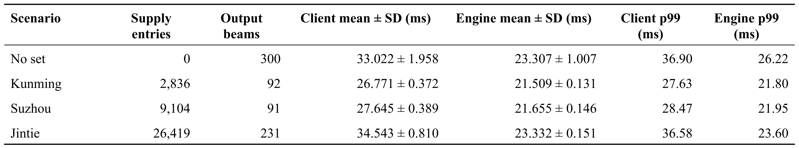
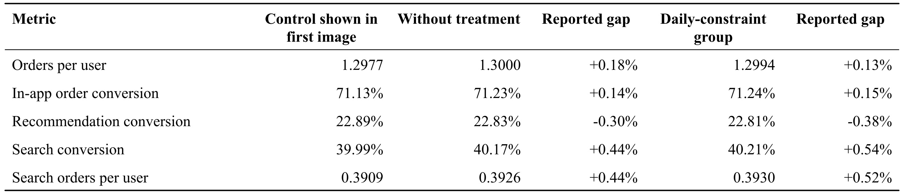
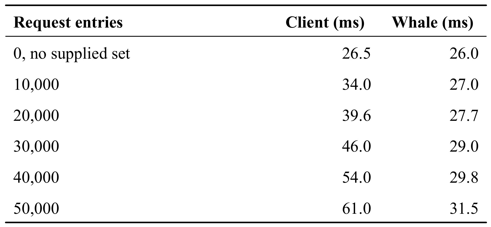

Generative Retrieval under Real-Time Supply Constraints in Local Commerce / 本地商业中的实时供给约束生成检索
Shaopeng Liang、Biao Zhang、Hongzhen Ye、Zeyang Hou、Ma Jiang 等来自 Rajax Network Technology（阿里淘宝闪购），前五位作者共同贡献。本文于 2026 年 11 月 4 日 10:56:02 UTC 提交 arXiv v1，本轮查阅该版本。稿件用内部工程快照和历史归档说明 RTP-LLM 中的实现，独立作者代码仓库未核验到。 论文原文
这篇工作研究三枚离散 token 就能表示一个商户的生成检索服务。模型按用户意图给这些 token 序列打分，供给服务再规定这个请求允许搜索哪些商户。论文把两个系统的交界拆到具体请求、时间点和字节数组，并给出多阶段工程数据，便于分开判断候选有效性、解码效率和履约结果。
本地商业里，目录中确实存在的商户或商品，也可能因位置、天气和路况而无法服务当前请求。先生成再过滤时，不可用候选已经消耗了束搜索容量和推理计算，而商户标识只有几个 token，在线准备供给约束也只有很短的摊销窗口。
1. 背景和问题
1.1 全局目录、当次供给和真实履约
传统召回服务一般先枚举或索引一批物品，再让排序器从候选中选出符合用户兴趣的结果。生成式检索将对象表示为模型词表中的短序列，模型根据查询、用户上下文和历史行为，逐个输出这个序列的 token。残差量化把实体向量依次分解到多个离散码本，几枚 token 共同构成语义标识 SID。具有相似表征的实体有机会共享一部分码，模型可以共享概率结构，不必把每个商户放进一个独立类别。部署时还要借助逆向资产把生成的码重新解释成目录中的业务对象。这里讨论的是生成、过滤和回查的服务链路，论文没有给出商户向量、模型训练数据和残差量化训练目标的完整实证。
在标准的生成检索路径上，多个高分部分序列构成每一步的束。由于模型在词表中的输出空间远大于实际码本组合，可能生成没有对应对象的 token 序列。全局目录树能在生成过程中排除这类组合。目录刷新后，新增或下架商户也能在资产版本切换后改变合法集合。可是全局索引回答的是一个对象是否存在或是否能参与通用检索。餐饮、即时零售的用户通常只接受当前地点能够履约的结果。外部供给服务会考虑用户地址和当前配送能力。同一商户可能对两个相邻位置产生不同供给判定，也可能因为天气或运力变化在不同时刻改变可用性。单日更新的全局资产无从表达这种差异。让生成模型在提示里看到某些天气或地理信息，同样无法自动保证其输出与真正掌握运力、营业和库存状态的系统一致。
论文用供给幻觉描述一种业务错误：生成结果能指向真实对象，却把它当成当前可提供的供给。这个词只描述履约资格，不能和自然语言事实幻觉混用。后置过滤可以保护用户看到的页面，但它依赖于先把候选生成出来。假如有限束的高分位置被不可配送门店占满，过滤后留给排序器的候选可能很少。扩大每步束宽或额外启动补召能够回填，但会增加模型前向、后端排队和候选去重成本，并且未必填回最相关的业务实体。更关键的是，某些前缀只有在其后的所有合法补全都来自当前可服务商户时才真正有继续探索的意义。实时约束允许在搜索树较早处排除无可行后继的路径，从而把束宽留给能到达供给集合的分支。是否由此提高相关性还要看存活分支本身的模型分数以及最终排序效果。
这里至少有三道资格判断。第一道检查三 token 的组合能否在当前映射版本中查到目录记录。第二道以当前请求和供给快照为输入，检查组合是否至少覆盖一个可服务实体。第三道发生在实体级，涉及逆向映射、重复项处理和查询到展示之间的供给刷新。假设同一个码对应两家门店，其中一家具备配送资格，另一家没有，生成这个码只能证明前者存在，不能把逆查得到的两个门店一并交给下游。又如供给源漏报临时恢复营业的门店，解码逻辑完全正确也无法补回这个实体。每个阶段的失败性质不同：第一种是目录资产或序列问题，第二种是搜索没受到请求约束，第三种是业务集合或时效问题。任何一个阶段的成功指标都不覆盖其他阶段的职责。
1.2 从合法路径到有用候选的资源口径
短 SID 使方案特别依赖关键路径。一次商户预测只有三步，读取供给服务、请求封装、参数传输、解析、排序、构建索引和上传可能都发生在第一步前。长文本生成可以把一次约束构建成本摊到许多后续 token，这里不能依靠这个条件。另一方面，如果相邻用户共享一部分商圈，候选集合不一定相同，直接缓存整份索引还必须处理版本和快照身份，否则一次命中可能把别的用户能买到的商品带进当前候选。作者选择以请求作为索引生命周期，并让当前请求的所有束共享该索引。这样削减的是同一次请求内部的重复准备，跨请求缓存命中或增量维护属于尚需验证的另一条路线。
测量时也要把三种数量分开。配置的最大束宽表示预算，采样实际得到的有效序列数表示搜索产出，逆查和去重后得到的可服务实体数才是排序端可以使用的结果。可能出现三百的配置、二百三十一个有效序列和更少的商户，也可能同一合法码展开成多个候选实体，具体要看映射规则。论文以跨请求聚合的单位可用实体成本表达第三种量。
符号解释： $x$ 是一条请求，$G_x$ 是该请求实测的加速器时间，$U_x$ 是回查、去重及资格检查后得到的独立可用实体数。分子覆盖零候选请求的实际开销，分母在整个负载上统计最终可用对象；若负载完全没有结果，不能报告有限的单位成本。这个量不能用单请求的引擎平均耗时除以配置束宽代替，因为两者都可能不对应它所定义的资源和产物。与延迟分位、召回质量和零结果比例并列，才能看清请求变快是否来自少做了有价值的工作。
进一步比较有两个不同的实验问题。同样的模型、请求和束日程下，让实时约束增加可用候选，说明可行分支利用更好，但模型词表投影和每步已分配的计算可以原样保留。反过来，固定候选质量和服务约束，再把较小束宽、较少重试或更少补召的资源与原系统比较，才有机会证明节省了计算。前一种结果是提高同预算产出，后一种结果是同质量降低预算。离线排序分数也不等于业务结果，特别是商户召回之后还有商品挂载、排序和库存复核。在论文材料里，几组数据从日级目录实验发展到请求级索引回放，时间、系统配置、输入规模与输出数量并未全部对齐。读实验时需要先明确是哪一阶段、哪条业务链路、哪种计时，再判断可以回答哪个问题。
2. 方法
2.1 供给解析与请求索引
系统接收同一请求的模型提示和由业务系统算好的可用实体快照。令映射将业务对象转换成固定长度码，先确定约束集合与目标。
符号解释： $\tau$ 是供给快照时间，$E_{x,\tau}$ 是外部服务判定可服务的实体，$e$ 是单个实体，$\phi$ 是版本一致的 SID 映射，$\mathcal V$ 是 token 词表，$L$ 为码长，本文实现在商户路径取三。集合在单次解码内固定。地点、天气和交通通过业务侧影响 $E$，没有作为这里的掩码核另算一遍。
符号解释： $y$ 是候选完整 SID，$p_\theta$ 是给定提示与上下文的检索模型分布，$K$ 是欲获得的结果数，$Y^\star$ 是理想的受约束高分集合。使用有限束只是在该集合的前缀上近似优化。即使每一步没有任何非法 token，过早剪掉某个局部低分前缀也可能丢失全局高分完整序列。
符号解释： $h$ 是当前已生成前缀，$v$ 是候选后继 token，$h\cdot v$ 表示追加后的前缀，$A_{x,\tau}(h)$ 是至少有一个供给 SID 可补全的后继集合。索引要回答的就是这个局部集合。前缀合法表达的是存在完成路径，既不承诺相关，也不要求其他束的前缀与它不同。

图的顶部把用户位置、天气和路况连到外部供给判断，画出三个示意商户中 M2 无法服务，因此传给后面模型服务的是 M1、M3 对应的两个 SID。版本化映射与供给判断放在同一上游阶段，原因是其中任何一端更新都可能改变请求应携带的码；以一端的版本解释另一端的值会使排除关系失效。中间实线框从同一请求的输入分出两条支路，CPU 解析、排序并合并共享前缀，GPU 预填充提示并产生首步 logits 及 KV。两条支路汇合后才把本请求索引上传，多个束共享只读数组，而每个束的前缀状态独立。末端先输出完整 SID，再以原快照解析实体、去重、检查新鲜度并交给下游排序。图中特意用虚线把业务契约和推理实现分开，不能从引擎实现倒推出供给服务已经准确判定了所有场景。M2 排除和两条合法码是说明输入集合如何改变图上的路径，既没有区域覆盖统计，也不提供实时业务效果。沿此图做故障归因时，应分别留下快照版本、SID 资产版本、生成码及解析结果。仅有生成码可解，仍无法区分请求带错集合、多个实体共码或展示时库存变化。若供给服务缺报 M3，模型无法通过提高其分数恢复它；若逆查忽略快照，模型也无法阻止同码的不可用实体再次出现。图最后一行的复查责任因此与前面的合法码归纳同等重要。对同一请求不宜在解码第二步切换索引。旧索引的状态编号只是该请求的行号，给新索引可能对应另一个前缀。新鲜度要求较高时，应在实体输出阶段复核，或明确重新开始一次请求并重新构造模型与约束状态。
索引输入可以是 SID 字符串列表、按六十四位整数打包后转 Base64 的数组，或按每层十六位偏移值打包再编码。偏移方案先在对应层的 tokenizer 基址上还原原 token，每个三元组原始负载六字节，尚未计 Base64 膨胀和请求结构。CPU 对合法三元组做字典序排序，压掉重复组合，相邻前缀聚成同一行。根节点不用为每个孩子显式保存跳转，根掩码记录合法首 token，首 token $a$ 转状态 $a+1$。二级前缀 $(a,b)$ 按排序秩分配到词表状态范围之后，三级后继写终点零。CSR 的行指针定位两块连续数组中的合法 token 及下一状态，留有填充行和词表外哨兵值。终点零与根共用编码，因此严格生成三步是保证的一部分，继续解码等于重新打开根路径。空集合、坏 token 和映射版本冲突属于请求校验，不应把填充值误当成可用结果。
2.2 保分束搜索与父状态传播
首步直接使用 prefill 给出的 logits。后续步骤消费上一次采样的 token 并更新模型 KV，再生成每条活跃束的 logits。要使受约束搜索保留模型原排序目标，先在未掩码的词表上逐父求归一项，再屏蔽非法扩展并比较得分。
符号解释： $i$ 是父束，$h_i$ 是其前缀，$s_i$ 是原模型给该前缀累积的对数概率，$z_{i,v}$ 是对后继 $v$ 的 logit，$u$ 遍历全词表，$\lambda_i$ 是第 $i$ 条父束自己的归一项。合法时新增的就是原模型条件对数概率。若改为仅对合法后继归一，第 $i$ 个父束会额外获得负的合法质量对数作为分数平移，父束之间平移不一样。原文举例，两个父前缀概率为 0.6 和 0.4，唯一合法后继的原条件概率分别是 0.1 和 0.9，原序列分数对应 0.06 和 0.36。各自把唯一后继重归一到一，比较反而成为 0.6 和 0.4。后置修分无法找回已经被跨父剪掉的分支，因而 fused 采样中的内部 log-softmax 要与这一步协调，避免重复归一。
符号解释： $j$ 是剪枝后子束下标，$\pi_j$ 是该子束在剪枝前所选父束下标，$v_j$ 是追加 token，$q$ 是 CSR 前缀状态，$\delta$ 从索引读取相应跳转。先 gather 原父行再推进。父束可能被重排、重复选择或彻底丢弃，因此子束数组第 $j$ 行无法沿用此前同下标的旧状态。文本历史、模型 KV、约束状态必须采用同一父关系，累计分数则采用该父与该 token 的配对结果。

上半部分先保存逐父全词表归一项，再用 CSR 得到的合法掩码去掉无效候选，最后在所有有效父子对之间排序。这样每条合法路径的新增概率由原模型提供，索引决定是否能走这条路径，两者可分别检查。下半部分用两个父节点展示顺序被翻转的情形。原父零有前缀一和状态二，原父一有前缀二和状态三；排序后子零反而继承原父一并追加三，走到前缀二、三所指向的状态十二。子一继承原父零并追加二，走到状态十一。颜色区分的是父祖先，不代表两个路径属于不同业务通道。若 sampler 只把被选 token 传给 dispatcher，不带父下标，数组仍能产出形状正确的两行，但状态可能查到另一条前缀，轻则丢失可行分支，重则把与历史不符的路径当成合法。KV 复用同样依赖正确 gather，否则采样似乎通过了约束，模型却在另一条历史上给分。图还标明有效父子对要排除 padding，故合法候选不足时应该缩小实际束而非用低分无效行填足。两条父路径的换位只是演示，不是可用率或吞吐实验。可以据此构造重排、同父多子、父被淘汰等小例，检查生成历史和分数是否逐步一致。对应的自动检查应覆盖原父同时分给两个子束的情形。两子束都从一份父历史取状态，推进各自的 token 后才分叉。如果其中一条边非法，分数更新与有效束更新也要一致排除它。只验证终点落在目录无法发现同一父路径上的排序破坏，因为错误分数仍可能挑中另一家合法店。需要逐步与参考束搜索的分数及父索引逐项对照。
算法按配置与合法候选数的较小值保留子束，允许某一步只剩一束而后续合法后继增多，再恢复较宽的有效束。把暂时一束当成永久贪心，会丢掉后续分支。理想伪代码在有效集合为空时返回空输出，实际请求解析仍可能把空约束字段分派到旧路径，异常载荷处理也较宽松。两个理论不变量因此依赖明示的前提。准确索引、正确祖先、只走合法边且在第三步停止时，完整 SID 由前缀归纳可知属于快照集合。若每一步用上式累加，保留下来的序列分数等于原模型对数概率。它们并不证明全局 Top-K、无偏受约束采样、歧义映射后的实体资格或快照之后的可履约性。
2.3 首步关键路径与实现成本
当提示和约束负载都到达，CPU 异步编译可以和 GPU 提示计算并行。首采样使用索引之前，需要等编译完成，再上传其数组和初始化约束相关状态。两段流水的重叠有明确的计时边界。
符号解释： $F$ 是提示预填充耗时，$W$ 是编译任务等待 CPU 工作者的排队时间，$C$ 是解析、排序和构建等准备，$H$ 是索引上传及首用初始化，$\Delta T_{\mathrm{first}}$ 是相对于该请求准备起点、额外暴露在第一次采样前的耗时。在两个支路同起点且互相独立的假设下，串行相比可隐藏 $\min(F,W+C)$。若 $W+C$ 不超过 $F$，仍须付出 $H$；如果供给负载很晚才到、短提示预填充太快或线程池在峰值排队，就会暴露更多等待。

时间图顶部先划出一个起点，即模型提示和当前可用 SID 集均已收到。供给查询以及把集合送到推理服务这两段在起点之前，不能用下方两条并行泳道解释它们是否已经被隐藏。CPU 行左边是等待调度，绿色块覆盖解析、排序和构建。GPU 行预填充先完成，斜线块说明它不能直接开始首采样，只能等待上支路到达汇合点。汇合之后还有独立的索引上传，然后首步才从已计算的 logits 进行选择。随着请求体大小、输入长度或线程池拥堵变化，斜线块可以扩大或消失，上传块仍要单独计费。图下方公式来自关键路径推导，块宽明确是示意，不是某个压测分位。后续步骤继续生成稠密掩码、做跨父选择，并有设备与主机之间的状态同步，不能把首步重叠推广成全请求没有准备开销。测量时可以给供给返回、请求发送、引擎接收、编译出队、编译完成、预填充完成、上传完成各打时间点。只有同一请求的这些点能把排队、并行隐藏量、同步和 RPC 开销拆开。把单独 profiler 的几个持续时间直接相减，会在请求起点、主机负载与输出宽度不一致时得到无法解释的结果。若这两条支路都需要共享线程资源，还应检查独立假设是否成立，例如解析线程抢占了负责分派 GPU 操作的 CPU 线程。这样测得的预填充时间可能自己也受编译影响，单用无约束时的预填充作为基准就会失真。把请求准备、排队和设备实际完成时间同时入日志，才能判断这是并行缩短还是资源争用。应将同一批次的队列深度一并留档。
符号解释： $I$ 是只读索引数组的静态大小，$V$ 是词表基数，$P_2$ 是不同的二级前缀数量，$U$ 是去重后完整 SID 数量。四字节行偏移表在前，合法 token 与后继两个四字节数组及填充项在中，尾项是一字节根掩码。$V=160000$ 时，单词表项约 2.08 MB 十进制。若 $U=40000$ 且二级前缀从一到四万，布局约 2.40 至 2.88 MB。这是由布局计算的数组大小，未含构建临时内存、模型 logits、KV、分配器和逐束掩码，也没有并发请求的峰值信息。
对固定三码长和 $N$ 个输入三元组，排序比较规模为 $O(N\log N)$，排序后的聚合和前缀分组为 $O(N)$。对 $B$ 条活跃束，当前实现仍分配 $B V$ 字节掩码。非根状态逐词表位置检查该行的合法后继，最大行度为 $d$ 时，最坏成员检查工作为 $O(B V d)$，掩码应用另需 $O(B V)$。稀疏描述约束状态节省的是重复储存与部分传输，未让投影层只算合法 logit。若基线每一步上传由主机生成的稠密掩码，单字节元素的传输量为 $V\sum_t B_t$；此方案在上传索引与剩余状态流量之和更小时才在传输量上占优。当前调度仍可把 token 拷到主机、把状态输入送回设备并取回更新，再根据父下标重排。推理期的这些开销在三码场景占比可能高，训练目标和数据处理则并未由此改变。
3. 实验结果
3.1 日级目录约束
论文将 3 月 10 日的商户目录案例、4 至 5 月的编译与采样工程记录、5 月的请求级服务测试与捕获请求回放分开。附录固定的代码快照晚于这些测量，包含当时的处理器选择、格式解析、异步索引及有效束传播路径。前几批记录没有完整标注每次部署的硬件、资产、二进制和工作负载。下面分别对照每一张表的统计单位。服务表中的无集合指请求没有提供实时 SID 集，不能由此判断其他目录约束都关闭。日级表中的未开启或已开启则特指当时的日级目录约束。

表中的每对数字按关闭、开启日级约束排列。只有锦铁的老乡鸡个案有明确的同束日程证据，两端配置均为五十、一百五十、三百，实际计数是二百九十九。过滤从一百七十变二十九，占初始候选的百分之五十六点八六和百分之九点七零，相差四十七点一六个百分点，存活商户从一百二十九增至二百七十。按记录分类，标为幻觉的筛除由一百二十到零，无效商户从二十四到三，距离筛除保持二十六。这支持刷新目录可以提高同一例中留给后续排序的商户数量。保留距离一列很关键，它说明约束未处理这个请求的供给资格。辽宁麦当劳的距离数从四十三到四十五，锦铁火腿肠从十到二十，两者也没有显示距离问题被消除。记录未给出最前面两种筛除类别的形式化规则，不能把它们全部当作前文定义的供给幻觉。三条都是选出的查询地点对，且后两条没有同样明确的束日程确认，因此不能拿这个表估计全量流量召回或推广到任意地点。对推荐系统来说，留存是中间结果，仍要观察留下来的对象是否满足意图以及下游如何排序。若后来商品挂载不足，商户数量增加也未必产生同方向结果。同一初始束数还不意味着同一查询的集合成员一致。约束之所以有意义正是因为它改变了成员，因此需要保留门店级配对和最终排序，验证新增候选是替换掉无效结果还是挤走了仍有价值的次优对象。
论文另列了门店到商品的三条对照。两边的商户束配置均为五十、一百、二百，商品束为二百、二百、四百。麦当劳留存商品三十三到四十，老乡鸡三十三到四十四，火腿肠四十八降到二十六。商品尚未有独立供给约束，表中的变化同时反映了门店候选差异和下游挂载、排序。当店铺相对同质时，额外门店可能带来许多重复商品，当商品强依赖店铺时，某些被替换的门店甚至承担着更丰富的有效供给。论文没有分开这两种机制。若要评估商品级方案，要给商品另有版本化映射、商品有效集合及去重结果，以商品为单位而非用门店指标代替。
3.2 编译和采样诊断
准备过程分成解析、排序、构建、等待和上传，原文留下若干单点记录。它们最适合指出待优化的位置。编译成本由输入总条数、前缀重复率和载荷格式共同影响，索引相同大小也可能来自不同解析路径和 CPU 排队。

NumPy 行对应三万三千七百六十六个三元组、三次平均，排序 7.70 ms、构建 8.63 ms，两者合计 16.33 ms。后期 C++ 原型记录约 3 ms 和约 1 ms，合计约 4 ms。第二行未重述完全相同的输入、硬件和协议，所以把两个合计相除所得倍率只有算术意义，不能写成受控编译加速。论文还报告过 Python/C++ 在样例上的匹配，包含二万七千零一十九个行指针位置和六万零一百三十七条打包 token 或状态条目，填充也在内。这是一次具体输入的布局一致性检查，覆盖不了坏格式、空输入、越界 token 或全部负载分布。即使两行都测了同一版本，表也只记录部分准备成本，既没有首用等待和上传，也没有 GPU prefill 已经覆盖了多少时间。实际选择索引优化方向时，完整计时要让输入指纹、线程池队列深度和按请求的上传统计一同保存。降低 CPU 时间有可能节省核心资源而不改变用户时延，也可能在短输入并发上直接改善首步，需按请求类型辨别。
另外两份工程记录分别给出 12.034 ms 的首采样区间和 11.579 ms 的首用初始化路径，后者包含等待编译任务。它们不是同一请求上的嵌套区间。后续两次检查报告为二和一微秒，说明对应记录里后续入口的轻量状态检查与首用明显不同。扁平化储存和 packed key 排序之后，记录的时间线不再显出同样的等待块，但原图没有给出零剩余开销的定量证据。采样侧也出现平局压力。一次掩码核记录为 53.805 微秒，稳定过滤核 3.892 ms，改路径后另一 radix 核记录 13.934 微秒。不同核和不同上下文不能拿来计算单一加速倍数。四月二十四日的 0.4B、四百六十条供给测试在束宽十、一百、二百时，启用相对关闭的差值分别为 +0.22、−0.72、+1.37 ms，也没有单向改善。有效束更新曾错误地在达到配置上限时不能继续传播，配置到三百却只输出一百五十。修正前后的结果量不同，使表面的速度比较可能奖励少输出一半候选的错误行为。应先过正确性对照，再谈性能。
3.3 服务 RT 与客户端 RT
五月十八日的开环报告每档暖机三十秒、稳态一百八十秒，无请求集合的提示约三百五十一个 token，请求约 4.5 KB，目标码长三，束日程五十、一百五十、三百。带三万条约束的请求约 581 KB，报告脚本没有成功解析该臂的 token 配置。两个报告来自同一服务的不同机器和时段，属于不同边界的观测对照。论文保留了服务 RT 的原命名，并指出其精确统计与打点还需确认。

横向四列先看服务侧两臂，再看客户端平均两臂。目标 QPS 十、十五、二十的服务 RT 分别从 26.1 到 26.7、25.8 到 26.4、25.4 到 26.0 ms，三个差值均为 +0.6 ms，约为百分之二点三。客户端均值分别是 28.2 到 47.1、28.1 到 47.3、27.6 到 46.7 ms，差值却在 18.9 到 19.2 ms。二十 QPS 时原文另给客户端 p99 为 30.7 和 55.9 ms。因两臂不是同主机同窗口，且较大请求体与未核验的 token 配置同时变化，不能直接分离编译、传输、解析、排队或其他栈的贡献。无超时也只覆盖报告的低档位和持续区间，无法外推饱和吞吐和线上尾时延。数值最适合提醒接入方选择测量边界。客户端有可能看到序列化、RPC 和结果回传，而服务 RT 的覆盖范围还要核验。把后者的增量当作用户额外等待的全部时间，会低估集成压力。若从旧协议换到更紧凑的编码，应让同一机器交叉交错地测试两种请求，并把上游供给计算和反查耗时另列，才有条件追踪变化来源。因此这张表可以定位报告之间的量级差，设计配对试验时仍需重新记录请求大小、解析结果与实际输出数。
资源监控还出现了分母错误。无集合报告把一台活动机器与一台空闲机器的利用率平均，带集合报告取跨机最大值。二十 QPS 下基线 GPU SM 更正为 15.82%，旧值 7.91%，对比臂 17.52%。修正避免一眼误判利用率接近翻倍，却没有把两个指标变成因果比较，作者因此从表中省略资源列。资源复盘需要同机器同采样窗口，且利用率只是忙碌程度，不直接等于一条请求消耗的 GPU 时间或新增 GPU 卡数。固定吞吐下，输出规模和 GPU 时间归因才适合用来估算单位可用候选成本。
3.4 捕获请求回放
五月二十五日材料改用测试供给代理路径捕获的 Base64 请求，共四组各二十条展示记录。三处地理场景与无集合基线采用不同输入，且不同地理组的输出束也不同。论文从四舍五入至 0.01 ms 的行级值重新计算均值、样本标准差和线性插值分位，没有重跑线上推理。所有展示行标为 PASS，原记录未说明判定谓词，故不能将其当成实体资格检查。

无请求集合输出三百束，客户端均值 33.022 ms、引擎均值 23.307 ms。锦铁二万六千四百一十九条供给输出二百三十一束，客户端 34.543 ms、引擎 23.332 ms。前者相对基线多约 1.52 ms，后者多约 0.03 ms。二者相减的残差分别约 11.21 与 9.72 ms，锦铁束更少而残差更大，说明不能简单假定额外时间随输出量单调增加，也无法把差值当成纯网络。昆明二千八百三十六条供给输出九十二束，客户端 26.771 ms、引擎 21.509 ms，苏州九千一百零四条供给输出九十一束，对应 27.645 和 21.655 ms。两地更快，同时有效束不到基线的三分之一，且表未给出独立实体数、召回质量、QPS、硬件和完整运行配置。样本量二十时，按线性插值算的 p99 已接近单组最大值，只能描述这几条请求，不能确立生产尾部。读表还需区分条目与可售实体，条目可能有重复码，束会在逆查后合并或筛掉。由此能确认的是请求路径能处理这几种供给规模，尚不能判断在相同有用候选数、召回率或流量强度时会省多少资源。若后续建立公开回放，应至少给相同提示和供给快照的成组记录。以同一可用质量匹配工作量后，分别看增加索引准备和减少候选无效计算的成本，避免只比较相同入口请求数。
原归档的波动表存在标签口径错位。标为引擎标准差的一列实际与重算的客户端样本标准差一致，所谓百分之四十七到五十的客户端波动没有从展示行得到支持。论文保留重算后的四组均值和标准差，注明原始附件、未取整日志和供给负载不公开。地理组结果用于挑选下一轮回放覆盖范围有价值，若用于验证天气、交通或快照变化的影响，要在同地点同一批提示上控制快照年龄与状态变化，否则差异可能来自商圈规模、查询类型及输出量，无法找到对应变量。
3.5 附录线上记录与早期规模扫描
附录的线上截图对应日级约束开发阶段。第一张能识别对照及没有日级处理的一组，第二张给出日级处理组和相对某对照的数值，但没有再次显示对照标识。两个观察窗口、实际样本、分流和置信区间都缺失。事件分母亦需补证，作者按源术语译出几个到访到购买指标。

表头有两列相对变化，分别针对各自截图中的对照。推荐转化一行第一张显示对照 22.89%、无处理 22.83%、相对差 −0.30%，第二张显示日级组 22.81%、报告差 −0.38%。搜索转化对应的报告差分别为 +0.44% 和 +0.54%。即使绝对值很接近，也不能用两列报告差相减声称增量作用，因为第二张控制组和时间窗口没有得到确认，且显示值经过舍入。用户人均单、应用内订单转化和搜索人均单亦遵循同一限制。这些快照可帮助后续选择应保留的业务指标，不能证明日级目录策略提高购买，也不能移作请求时约束结果。若商品侧处于不同时期的挂载策略，业务路径依赖还会进一步加大。复核需回到同一个随机分流、同样的统计窗口、明确的访问与曝光分母，并给出样本量和区间。当前数据应作为历史上下文与新回放分开归档。尤其在业务同时涉及搜索和推荐时，应固定各入口的用户划分和事件定义。按相同流量基础报告两个渠道，才能讨论局部改善是否抵消了另一渠道的变化。

这次早期扫描使用四百一十七 token 提示、五十到一百五十再到三百的束日程、QPS 一。随零条到五万条，客户端从 26.5 增至 61.0 ms，Whale 从 26.0 增至 31.5 ms，增量分别 34.5 和 5.5 ms。Whale 侧明确排除序列化与反序列化，而客户端包含更宽边界，但历史表没有逐请求行、方差或硬件配对。零条表示没有提交供给集合，无法用来测试真实空供给。中间三万条的两个值是 46.0 和 29.0 ms，与五月十八日 30,000 条的两套边界并不一致，也不应用作优化前的基线。早期扫描能说明随载荷变大，客户端观察与窄路径观测可能分离。它与后来的 Base64 捕获回放适用不同输入和部署，不能把同条目数当成唯一控制条件。合理的下一步是在同一版本上改变载荷大小、二级前缀重复率和约束格式，固定提示、有效束与并发预算，分开估计解析和发送的影响。如此才能识别增长来自字节、编译状态数还是其他因素。早期记录适合提出载荷形态的假设，后期对照应控制编码格式和请求规模，不能仅按输入条目对齐。
综观这些记录，最扎实的相对证据是一个日级目录的同束案例和一组明确标注边界的捕获回放。前者更接近有用产出侧，后者更接近工程可执行性，两者没有共同的模型、快照与输出质量锁定。后续受控对照应该在同一时间戳的供给上分别运行后过滤、全局目录树、请求级约束。第一组固定各步配置和实际可比较预算，观察逆查后可履约实体数、零结果率和排序有效性。第二组将可用召回和服务指标校准到相同目标，再允许改变束或补召预算，测 CPU 时间、GPU 时间和客户端尾延迟。这样能发现索引准备何时被减少重试抵消，何时稠密采样与上传反而吃掉收益。
4. 总结
4.1 设计判断
这项工作的主要贡献是把模型相关性与可服务集合放进同一个可检查的推理过程。用一份带时间和版本的请求索引限制搜索，再用全词表分数比较合法分支，既保留模型学到的排序目标，也让业务资格具备明确入口。三步固定码、无效填充排除和父状态重排把可靠性要求落到了可以写单测的粒度。实际工程里，原先最难解释的常是“模型已生成商户”究竟对应什么对象，以及报表中的计时包含哪一段服务。论文把完整码、逆查后实体、有效束和配置宽度分别命名，为追踪这些差异提供了口径。
对推荐和广告召回，这个思路可迁移到瞬时库存、授权覆盖或用户定向集合，但必须先确认请求能否经济地携带候选约束。全量显式枚举适用于当次集合可以直接求出且规模可控的场景。更大集合可以先做业务过滤、版本化缓存或规则索引，再按同样的实体级目标比较。对工具调用或受约束生成也有相似问题：能生成形式合法的工具名，不代表当前用户有权限执行。如果授权在发出调用时改变，服务端仍需二次验证。原模型分数保留对有限束搜索有明确意义，若产品目标是按条件分布抽样，则要先重新定义所需的分数和归一化。
4.2 局限与复核重点
- 实体与时间。 合法完整码只证明属于约束快照。碰撞、别名、逆查不一致和过期快照都需要单独检查。漏报可服务实体会直接丢失召回，模型无法补偿。
- 异常请求。 伪代码支持没有合法后继时提前结束，但实现中空字段可能走旧处理器，畸形负载也未统一封闭。迁移时要区分“未传约束”“供给确实为空”“约束载荷错误”和“版本不匹配”，每种状态分别决定是否允许退化。
- 系统代价。 CPU 解析与排序、首次上传、稠密掩码、全词表投影、状态往返都仍存在。静态索引公式与测到的总内存、线程池拥堵及高并发尾延迟需要各自验证。等价的分数公式也不能替代 fused 核的平局顺序测试。
- 证据覆盖。 日级案例、异主机负载、二十条每组的回放和线上截图分属不同阶段。没有版本匹配的同预算质量试验，没有相同质量下的资源节省估计，也没有能归给请求约束的线上业务因果结果。
- 商品粒度。 当前实现在三 token 商户路径。商品可以用同一集合形式表达，但可能需要更大的映射及资格列表；下游挂载、库存更新、同码合并和延迟都要重新量测。
可沿三个方向复核。先用小词表穷举合法序列，覆盖多个子束共享父束、单束收缩再扩张、状态零停止与非法填充，逐步对账模型原始分数。再用同请求快照在同主机对齐三种召回路径，记录实际有效束、去重后可用商户、召回或排序质量和零结果比例。最后加快照版本与年龄维度，分别测试新鲜和过期的候选，量化回查和补召对端到端尾延迟的影响。只有这些观测一起给出，才能决定请求级约束最适合用来提高候选产出、控制资格，还是在既定质量下减少解码及补召资源。 追踪每个阶段的失败比例也能避免把截断、空供给和资产错配都记作模型召回不足。若业务需要安全退化，评估还应保留回退所产生的实际结果数和资源账，避免把无结果请求从统计中漏掉。